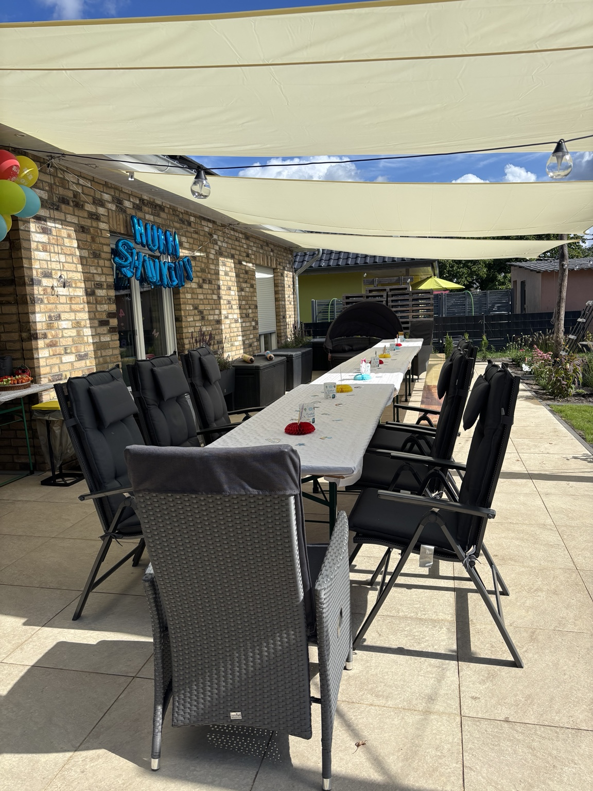

TRISSI Engineering
Technische Lösungen für echte Probleme.
Für Menschen, Unternehmen und Organisationen, die eine technische Lösung brauchen.
TRISSI Engineering hilft, wenn aus einer Idee, einem Defekt, einem Sonderwunsch oder einem technischen Problem eine machbare Lösung werden soll.
Wobei TRISSI Engineering helfen kann
Von der Idee zur technischen Lösung.
Manchmal reicht eine gute Planung. Manchmal braucht es ein CAD-Modell. Manchmal einen Prototyp. Manchmal eine Empfehlung, welcher Weg technisch und wirtschaftlich sinnvoll ist.
Konstruktion & Planung
CAD-Konstruktion, technische Skizzen, Projektplanung, Produktentwicklung und technische Konzepte.
Sonderteile & Prototypen
Ersatzteile, Halterungen, Sonderlösungen, Prototypen und 3D-Druck als Werkzeug im Entwicklungsprozess.
Reverse Engineering
Bestehende Bauteile verstehen, verbessern, nachbilden oder neu denken.
Typische Anfragen
Wenn Standard nicht passt.
Ersatzteil
„Dieses Teil gibt es nicht mehr.“
Ein vorhandenes Teil fehlt, ist kaputt oder muss neu gedacht werden.
Halterung
„Ich brauche etwas, das genau hier passt.“
Individuelle Befestigungen, Halterungen oder Sonderlösungen.
Idee
„Ich habe eine Produktidee.“
Aus einer Vorstellung wird ein Konzept, Modell oder erster Prototyp.
Haus & Garten
„Standardlösungen funktionieren hier nicht.“
Planung und Entwicklung individueller Lösungen für Außenbereiche, Werkstatt und Freizeit.
Machbarkeit
„Geht das überhaupt?“
Technische Einschätzung, Lösungswege und sinnvolle nächste Schritte.
Prototyp
„Ich möchte etwas testen.“
Ein erster Aufbau kann helfen, Ideen greifbar und prüfbar zu machen.
Projektbeispiele aus TRISSI Engineering
Nicht jedes Projekt beginnt mit einem fertigen Auftrag.
Manche beginnen mit einem Problem, einer Idee, einem vorhandenen Material oder dem Gefühl: Daraus müsste man doch mehr machen können.


Familien-Spielplatz
Ein wachsendes Spielplatzkonzept und ein Ursprungsgedanke von TRISSI.
Projekt ansehenTechnisches Problem?
Beschreib, was funktionieren soll.
TRISSI Engineering schaut sich dein Anliegen an und prüft, welcher technische Weg sinnvoll ist.
Direkt an TRISSI Engineering:
engineering@trissi.net
Hilfreich:
Fotos, Maße, Skizzen, Defekte, vorhandene Teile, gewünschte Funktion und Einschränkungen.
engineering@trissi.net
Hilfreich:
Fotos, Maße, Skizzen, Defekte, vorhandene Teile, gewünschte Funktion und Einschränkungen.